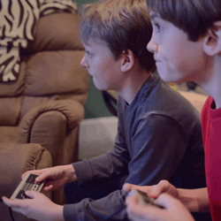
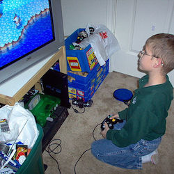
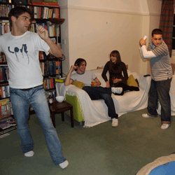
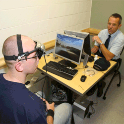

Video games provide an effective prevention and treatment strategy
for a variety of problems, such as Alzheimer’s and ADHD. Cognitive
activities, such as playing games, have shown a reduction in the age at
onset of Alzheimer’s disease1,2. These cognitive changes
might be influenced by top-down
processing, i.e. problem solving and decision making in games, or
through bottom-up processing, i.e. learning and remembering rules,
pieces, etc., attending to new points of interest, visually and
mentally modeling the environment, and so on. Aart et al. report
a number of problems that video game neurofeedback can be applied to as
medication; these include alleviating attention and hyperactivity
disorders, muscular tonicity recovery for cardiovascular patients,
relaxation and meditation to cope with mental stress, and improvements
in weight loss and overall fitness3. By wielding the
intrinsic
motivation within video games, video game neurofeedback is effective in
training and facilitating patient progress.
Video games serve as effective tools in treating a number of physical
problems because they provide results that address the cause as well as
the symptoms. For instance, video games provide an effective treatment
option to amblyopia patients who have difficulty in visual processing
4. To help correct these neurological
problems, amblyopia patients use a treatment—perceptual learning—that
parallels video game play. Similar to perceptual learning, video games
provide an engaging task, immediate feedback with rewards for good
performance, and changes in difficulty to challenge the player. Video
games intrinsically support the treatment of patients with amblyopia by
reconstructing neurological connections and perception mechanisms.
Another example of video game treatment involves video game play and
virtual reality improvements on arm strength and function after a
stroke5. While the results weren’t
dramatic, they provided positive evidence of virtual reality gaming as
a useful, alternative treatment compared to traditional methods. As
Saposnik and Levin state, “VR and video game applications may be
promising strategies to increase the intensity of treatment and to
promote motor recovery after stroke”5. Video games are a
relatively cheap and abundant source for alternative treatment, and
they can be customizable for a number of patients and conditions.
Sources:
- Croisile, B., Miner, D., Belier, S., Noir, M., & Tarpin-Bernard, F. (2007). Online cognitive training improves cognitive performance. Retrieved from http://www.happy-neuron.com/rsc/hn_vital/docs/Online%20Cognitive%20Training%20Improves%20Cognitive%20Performance.pdf
- Hertzog, C., Kramer, A., Wilson, R., & Lindenberger, U. (2009). Enrichment effects on adult cognitive development. Psychological Science in the Public Interest, 9(1), 1-65. doi:10.1111/j.1539-6053.2009.01034.x
- Aart, J., Klaver, E., Bartneck, C., Feijs, L., & Petters, P. (2007). Neurofeedback gaming for wellbeing. Proceedings of the International Conference on Advances in Computer Entertainment Technology: Brainplay 2007 Playing with Your Brain-Computer Interfaces and Games Workshop at Advances in Computer Entertainment. Retrieved from http://www.tue.nl/en/publication/ep/p/d/ep-uid/211045/?no_cache=1
- Astle, A., Webb, B., & McGraw, P. (2011). Can perceptual learning be used to treat amblyopia beyond the critical period of visual development? Ophthalmic & Physiological Optics, 31(6), 564-573. doi: 10.1111/j.1475-1313.2011.00873.x
- Saposnik, G., & Levin, M. (2011). Virtual reality in stroke rehabilitation : A meta- analysis and implications for clinicians. Stroke, 1380-1385. doi: 10.1161/STROKEAHA.110.605451
| Holistic Gaming | |
|---|---|
| Games & Play |
Video Games
& Video Game Play  |
| Educational
Games |
Learning Tools  |
| Physical & Psychological Effects of Video Game Play | |
| Brain-Mind
Relationship |
The Good  |
| The Bad |
The Ugly
Duckling |
| A Future for Holistic Gaming | |
| Research Tools  |
Educational
Value |
| Prevention
& Treatment Strategies |
A Complete
Systems Learning Game |